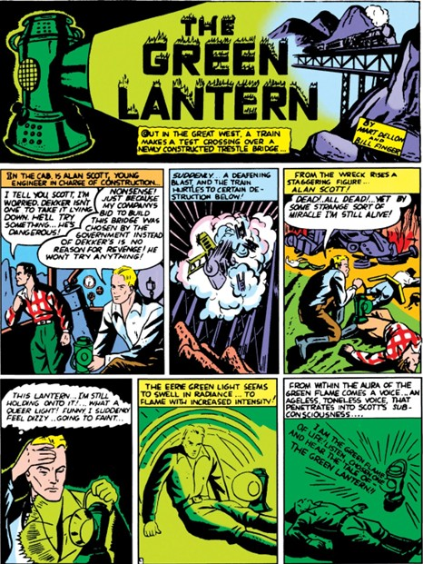
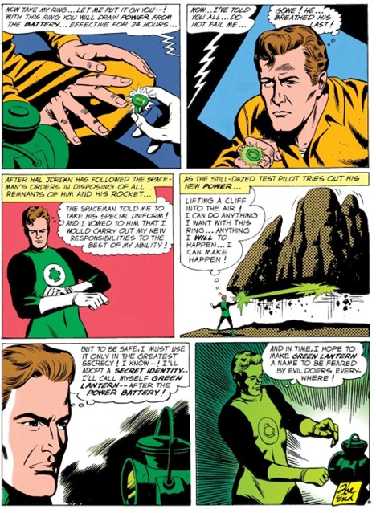

Magic vs. Law: Two Lanterns, Two Worlds
Alan Scott and Hal Jordan may both be Green Lanterns, but their worlds couldn’t be more different.
Alan Scott’s powers came from a mystical flame and a prophecy, guiding him to fight crime as a lone vigilante. His adventures were grounded in magic, myth, and personal justice, no cosmic bosses, just one man doing what’s right.
Hal Jordan, on the other hand, served a structured space police force, the Green Lantern Corps, under the watchful eyes of the ancient Guardians of the Universe. While Hal started as a loyal soldier, he quickly found himself questioning orders, especially when justice clashed with authority.
Where Scott’s world celebrated myth and moral clarity, Jordan’s stories tackled hierarchy, corruption, and moral complexity, mirroring a society growing more skeptical of institutions.